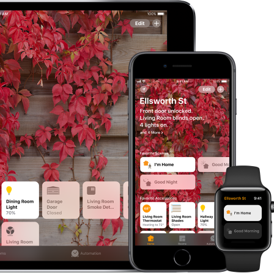

Apple HomeKit
En la guerra por acaparar el mercado del hogar inteligente, Apple no podia quedarse atras, y lo hace por medio de Apple HomeKit aprovechando la gran base de clientes que actualmente cuentan con un terminal IOS. HomeKit nace como la solución domótica de la marca ofreciondo la posibilidad de integrar tus dispositivos conectados de una manera eficiente e inteligente.
Todas las tareas se hacer desde el centro de control Apple Home o Casa, aplicación que controla los accesorios HomeKit en segundo plano desde cualquier dispositivo, para garactizar la compatibilidad, es necesario que los dispositivos domóticos tengan la leyenda "works with Apple HomeKit"
¿Que se puede hacer con Apple HomeKit?
Actualmente mas de 100 marcas de todo el mundo estan desarrollando productos para HomeKit, lo que significa que la oferta que ya es muy variada ira creciendo día con día.
Manten al día tu habitación sin estar ahi
Desde el centro de control (la app Casa o Apple Home) se pueden agrupar los dispositivos por habitacion, de esta forma, es más fácil controlalos desde cualquier parte de la casa con un simple toque o un click. Puedes pedir a Siri por ejemplo subir la temperatura de la habitación o bien, para tareas mas complejas presionar un ícono.
Cuida de tu hogar y de tus datos personales
La instalación de camaras de seguridad compatibles con sistemas domóticos puede traer cierto grado
de preocupación sobre todo por una posible perdida de datos, para esto, HomKit ofrece una
funcionalidad de video seguro, de esta manera, la actividad que detectan las camaras de seguridad
es analizada de manera segura por la central de la casa usando la inteligencia del dispositivo para
determinar la presencia de personas, mascotas o vehiculos. La actividad recabada lanzara alertas a
las personas con acceso a la app Casa permitiendoles ver en video lo ocurrido. El video permanece
almacenado en iCloud sin afectar los plalnes de almacenamiento por 10 días.
Apple menciona que fabricantes como Eufy, Logitech y Netatmo ya anunciaron que ofreceran productos
compatibles.
Seguridad en tu hogar y en tus datos confidenciales
Ya que la mayoria de los dispositivos electronicos digitales que manejen datos personales confidenciales
tienen siempre una posibilidad de ser vulnerados por ciberataques, Apple ofrece routers compatibles con
HomeKit como parte fundamental de la seguridad del hogar inteligente. Estos routers protejen cada uno de
tus dispositivos, esto significa que si alguno se viera comprometido, se impide el acceso a los demas
dispositivos y a tus datos personales.
Ademas Apple tambien menciona que fabricantes como Eero, Linksys y Charter Spectrum ya anunciaron productos
compatibles con HomeKit.
Creación de perfiles de uso
Con la app Casa se pueden agrupar diferentes tipos de dispositivos compatibles para establecer comportamientos coordinados de acuerdo con una ambiente, esto permite controlarlos todos con un solo comando. Por ejemplo se puede crear un ambiente "saliendo de casa" para apagar luces, cerrar puertas y bajar termostatos al mismo tiempo.
Usar Siri como interruptor
Al igual que con sus contrapartes de Google o Amazon puedes utilizar comandos de voz a traves de Siri para
realizar el control de tus dispositivios compatibles con HomeKit, además, con Apple Tv o HomePod puedes
realizar estas acciones sin estar en casa, por lo que puedes preparar tu casa con la iluminación y la
calefaccion adecuadas para tu llegada.
En general el ecosistema domótico que ofrece Apple es muy parecido a lo que ofrece Amazon y Google, sin embargo,
hay que tener en cuenta que en este caso además de la inversión por los dispositivos inteligentes se tendria que
hacer una inversión inicial por un terminal Apple capaz de fungir como centro de control, si es que no se cuenta
con un uno ya, por lo tanto, este ecosistema seria ideal para quien ya usa dispositivos Apple.